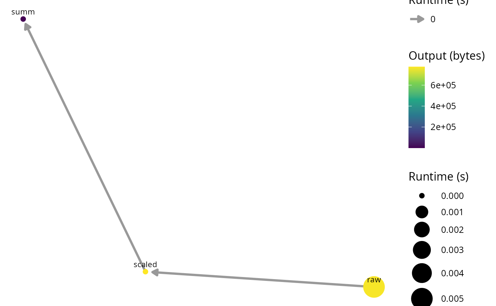

Visualize a targets pipeline as a resource-annotated network
Source: R/ga_targets_network.R
ga_targets_network.Rd
Draw the dependency graph of a targets pipeline with
ggnetwork, encoding the per-target computational cost as visual
aesthetics: node size and color map to a resource metric (runtime
in seconds or output size in bytes) and each edge width maps to the
runtime of its downstream target. This gives a quick, at-a-glance picture of
where a pipeline spends its time and storage, complementing the aggregated
figures of ga_targets().
The per-target metrics (seconds, bytes) are taken directly from
targets::tar_network(), so no separate tar_meta() call is
needed.
Usage
ga_targets_network(
store = targets::tar_config_get("store"),
script = targets::tar_config_get("script"),
tar_network_raw = NULL,
size_by = "seconds",
color_by = "bytes",
layout = "fruchtermanreingold",
label = TRUE,
arrow_gap = 0.02,
...
)Arguments
- store
(character, default
targets::tar_config_get("store")) Path to the targets data store. See?targets::tar_network().- script
(character, default
targets::tar_config_get("script")) Path to the target script file (e.g._targets.R). Required bytargets::tar_network()to build the pipeline graph. See?targets::tar_network().- tar_network_raw
(optional list) A precomputed
targets::tar_network()result (a list with$verticesand$edges). When supplied,storeis ignored. Useful for tests, custom analyses, or when the pipeline metadata is already loaded.- size_by
(character, default "seconds") Vertex attribute mapped to node size. One of "seconds" (runtime) or "bytes" (output size).
- color_by
(character, default "bytes") Vertex attribute mapped to node color. One of "seconds", "bytes" or "status" (the target build status).
- layout
(character, default "fruchtermanreingold") A network layout name passed to
ggnetwork::ggnetwork().- label
(logical, default TRUE) Draw the target names next to the nodes.
- arrow_gap
(numeric, default 0.02) Gap left between the arrow head and the target node, passed to
ggnetwork::ggnetwork().- ...
Additional arguments passed on to
ggnetwork::ggnetwork().
Value
A ggplot object showing the pipeline network.
Examples
targets::tar_dir({ # tar_dir() runs code from a temp dir for CRAN.
targets::tar_script(
{
list(
targets::tar_target(raw, rnorm(1e5)),
targets::tar_target(scaled, raw * 2),
targets::tar_target(summ, mean(scaled))
)
},
ask = FALSE
)
targets::tar_make(reporter = "silent")
net <- targets::tar_network(targets_only = TRUE)
ga_targets_network(tar_network_raw = net)
})
